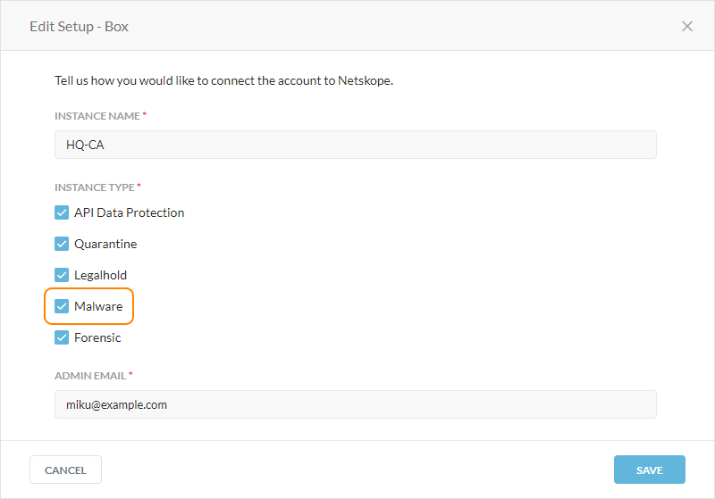

Configure Threat Protection for API Data Protection
Netskope can scan files stored in your cloud storage applications for malware. To do this, you must configure the API Data Protection settings and enable malware scanning for your application instances.
Prerequisites
Before configuring threat protection for API Data Protection, ensure you:
Enable malware scanning in an API Data Protection app instance. Go to Settings > API-enabled Protection > SaaS, and select an existing app instance. In the Edit Setup window, under Instance Type, select Malware. Repeat for all app instances you want to perform malware scanning.
Create a quarantine profile.
Create a remediation profile.
Configure Threat Protection for API Data Protection
To configure threat protection for API Data Protection:
In the Netskope tenant UI, go to Settings > Threat Protection > API-enabled Protection.
Under Settings, click Edit to configure your malware settings. By default, malware remediation profiles are disabled.
In the Edit Settings window:
Low Severity Action: Choose the action you want to take for low severity malware. Netskope recommends choosing Alert. Select Remediation Endpoints to use a remediation profile during the scan.
Alert: Select to generate a Skope IT alert.
Quarantine: Select to quarantine the file. Netskope zips/compresses the password-protected file and notifies the specified users.
Medium Severity Action: Choose the action you want to take for medium severity malware. Netskope recommends choosing Alert. Select Remediation Endpoints to use a remediation profile during the scan.
Alert: Select to generate a Skope IT alert.
Quarantine: Select to quarantine the file. Netskope zips/compresses the password-protected file and notifies the specified users.
High Severity Action: Choose the action you want to take for high severity malware. Netskope recommends choosing Quarantine. Select Remediation Endpoints to use a remediation profile during the scan.
Alert: Select to generate a Skope IT alert.
Quarantine: Select to quarantine the file. Netskope zips/compresses the password-protected file and notifies the specified users.
Quarantine Profile: If you chose the Quarantine action, choose the quarantine profile used to store the files infected with malware.
Note
You can only use one quarantine profile for a specific app to store the malicious files. For example, if you create a quarantine profile on Box. Netskope will use it to quarantine malicious files for the rest of the app instances with Enable Malware Scan selected (see Step 5).
Remediation Profile: If you selected Remediation Endpoints, choose the remediation profile, which leverages endpoint detection and response (EDR) to remediate the malicious file.
File ZIP Password: Enter a password for the ZIP file. Netskope quarantines and protects infected files with this password to prevent users from accidentally downloading infected files to their device.
Notify: Select who to notify when Netskope quarantines malicious files.
Users in quarantine profile: The users or admins specified in the associated quarantine profile.
Owner: The owner of the file.
Admin: All tenant admins configured for your organization.
Collaborators: The collaborators of the file.

Click Save.
Under Malware Instances, select Enable Malware Scan for the app instances you want to perform malware scanning.

You can view scanned malware for your app instances on the malware and malicious sites pages.